(по ГОСТ 32945-2014 и КМС ГОСТ Р 52289-2004) от 05 февраля 2020 года No 62
Скачать pdf (интерактивный): Дорожные знаки 2020
Скачать pdf (белый фон): Дорожные знаки 2020


1. Предупреждающие знаки.
Предупреждающие знаки применяют для информирования водителей о характере опасности и приближении к опасному участку дороги, движение по которому требует принятия мер, соответствующих обстановке.
Знак 1.1 "Железнодорожный переезд со шлагбаумом"
Устанавливают перед всеми железнодорожными переездами, оборудованными шлагбаумами.
Пояснения:
Предупреждает о приближении к ж/д переезду со шлагбаумом. Вне населённого пункта (н.п.) устанавливается на расстоянии 150-300 м, в населённом пункте — на расстоянии 50-100 м. Знак может устанавливаться и на ином расстоянии, но при этом расстояние оговаривается таб.8.1.1 «Расстояние до объекта».
Особенности:
Водителю ТС пересекать ж/д пути можно только по ж/д переездам, уступая дорогу поезду (локомотиву, дрезине).
Знаки 1.1, 1.2 обязательно повторяются вне н. п., при этом второй знак устанавливается на расстоянии не менее 50 м (всего повторяется вне н. п. 6 знаков).
Запрещается:
- обгон на ж/д переездах и ближе, чем за 100 м перед ними;
- остановка и стоянка на ж/д переездах;
- стоянка ближе 50 м от ж/д переездов;
- разворот;
- движение задним ходом;
Знак 1.2 "Железнодорожный переезд без шлагбаума"
Устанавливают перед всеми железнодорожными переездами, не оборудованными шлагбаумами.
Пояснения:
Предупреждает о приближении к ж/д переезду без шлагбаума. Вне населённого пункта (н.п.) устанавливается на расстоянии 150-300 м, в населённом пункте — на расстоянии 50-100 м. Знак может устанавливаться и на ином расстоянии, но при этом расстояние оговаривается таб.8.1.1 «Расстояние до объекта».
Особенности:
Водителю ТС пересекать ж/д пути можно только по ж/д переездам, уступая дорогу поезду (локомотиву, дрезине).
Знаки 1.1, 1.2 обязательно повторяются вне н. п., при этом второй знак устанавливается на расстоянии не менее 50 м (всего повторяется вне н. п. 6 знаков).
Запрещается:
- обгон на ж/д переездах и ближе, чем за 100 м перед ними;
- остановка и стоянка на ж/д переездах;
- стоянка ближе 50 м от ж/д переездов;
- разворот;
- движение задним ходом;
Знаки 1.3.1 "Однопутная железная дорога" и 1.3.2 "Многопутная железная дорога" устанавливают перед всеми железнодорожными переездами без шлагбаума соответственно через железную дорогу с одним или двумя и более путями.
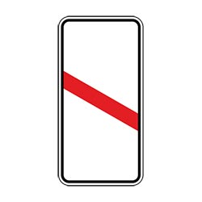
Знаки 1.4.1-1.4.6 "Приближение к железнодорожному переезду" устанавливают вне населенных пунктов на дорогах с двумя и более полосами для движения в обоих направлениях перед каждым переездом, а на дорогах с одной полосой - при расстоянии видимости переезда менее 300 м.
Особенности:
Знаки 1.4.1-1.4.3 устанавливаются с правой стороны дороги. а знаки 1.4.4-1.4.6 — с левой.
Знак 1.5 "Пересечение с трамвайной линией" устанавливают перед пересечением дороги с трамвайными путями вне перекрестка, а также перед перекрестками (площадями), через которые проходят трамвайные пути, при расстоянии видимости путей менее 50 м.
Особенности:
1. При одновременном праве на движение (когда транспортные средства находятся в равнозначных условиях) водители трамваев имеют преимущество.
2. Вне перекрестков, где трамвайные пути пересекают путь движения безрельсовых транспортных средств, трамвай имеет преимущество, кроме случаев выезда из депо.
Знак 1.6 "Пересечение равнозначных дорог" устанавливают на подъездах к перекрестку равнозначных дорог, с которых расстояние видимости перекрестка вне населенных пунктов менее 150 м, а в населенных пунктах - менее 50 м.
Знак устанавливают перед перекрестком, на котором отменяют очередность проезда, установленную знаками приоритета.
Особенности:
На таких перекрестках равнозначных дорог обгон запрещен всех видов транспорта всеми транспортными средствами.
Знак 1.7 "Пересечение с круговым движением" устанавливают перед перекрестками, обозначенными знаками 4.3, вне населенных пунктов - перед каждым перекрестком, в населенных пунктах - перед перекрестками, расстояние видимости которых менее 50 м, а также перед перекрестками, на которых отсутствует искусственное освещение.
Особенности:
При подъезде к такому пересечению рекомендуется снизить скорость до безопасных пределов и руководствоваться правилами проезда перекрестков.

Знак 1.8 "Светофорное регулирование" устанавливают вне населенных пунктов перед каждым перекрестком, пешеходным переходом или участком дороги, кроме железнодорожных переездов, движение на которых регулируется светофорами, в населенных пунктах - при расстоянии видимости светофора менее 100 м, а также перед первым после въезда в населенный пункт перекрестком или пешеходным переходом со светофорным регулированием.
Особенности:
Знак предупреждает о приближении к перекрестку, пешеходному переходу или участку дороги, движение на котором регулируется светофором.
Желтый фон на знаке 1.8, установленных в местах производства дорожных работ, означает, что эти знаки являются временными.
В случаях если значения временных дорожных знаков и стационарных дорожных знаков противоречат друг другу, водители должны руководствоваться временными знаками.
Знак 1.9 "Разводной мост" устанавливают перед всеми разводными мостами и паромными переправами.
Знак 1.10 "Выезд на набережную" устанавливают перед участками дорог, выходящими на набережную или берег какого-либо водоема.

Знаки 1.11.1 и 1.11.2 "Опасный поворот" устанавливают перед кривыми в плане, на которых значение коэффициента безопасности менее 0,6, а также перед кривыми в плане, на которых расстояние видимости встречного автомобиля при скорости, характерной для предшествующего кривой участка дороги, меньше минимального расстояния видимости, обеспечивающего безопасность движения.
Знаки 1.12.1 и 1.12.2 "Опасные повороты" устанавливают перед двумя и более следующими друг за другом кривыми в плане, если расстояние между ними менее 300 м и, если перед первой из них установлен соответственно знак 1.11.1 или 1.11.2.
Знаки 1.13 "Крутой спуск" устанавливают:
- если длина участка дороги на спуске или подъеме больше указанной при соответствующей величине уклона;
- если на вертикальных выпуклых кривых расстояние видимости встречного автомобиля меньше указанных при скорости, характерной для предшествующего кривой участка дороги.
Особенности:
Знак 1.13 может устанавливаться без таб.8.1.1 непосредственно перед крутым спуском или подъемом.
Уступить дорогу, при наличии препятствия на уклонах, обозначенных знаками 1.13 и 1.14, должен водитель ТС, движущегося на спуск.
Знаки 1.14 "Крутой подъем" устанавливают:
- если длина участка дороги на спуске или подъеме больше указанной при соответствующей величине уклона;
- если на вертикальных выпуклых кривых расстояние видимости встречного автомобиля меньше указанных при скорости, характерной для предшествующего кривой участка дороги.
Особенности:
Знак 1.14 может устанавливаться без таб.8.1.1 непосредственно перед крутым спуском или подъемом.
Уступить дорогу при наличии препятствия на уклонах, обозначенных знаками 1.13 и 1.14 , должен водитель ТС, движущегося на спуск.
Знак 1.15 "Скользкая дорога" устанавливают перед участками дорог, на которых коэффициент сцепления шины с покрытием менее 0,4.
Особенности:
В целях предотвращения заноса на участках, обозначенных знаком, необходимо двигаться с пониженной скоростью, без резких ускорений и торможений, плавно вращая рулевое колесо, так как коэффициент сцепления шин с покрытием в силу обстоятельств очень мал.
Желтый фон на знаках 1.15 установленных в местах производства дорожных работ, означает, что эти знаки являются временными.
В случаях если значения временных дорожных знаков и стационарных дорожных знаков противоречат друг другу, водители должны руководствоваться временными знаками.
Знак 1.16 "Неровная дорога" устанавливают перед участками дорог, имеющими повреждения покрытия (выбоины, неплавное сопряжение подходов с мостовыми сооружениями, волнистость и т.п.), затрудняющие движение транспортных средств с разрешенной Правилами дорожного движения скоростью.
Особенности:
Во избежание потери управления и устойчивости двигаться на таких участках следует с пониженной скоростью.
Желтый фон на знаке 1.16 установленных в местах производства дорожных работ, означает, что эти знаки являются временными.
В случаях если значения временных дорожных знаков и стационарных дорожных знаков противоречат друг другу, водители должны руководствоваться временными знаками.
Знак 1.17 "Искусственная неровность" устанавливают перед искусственной неровностью для принудительного снижения скорости.
Знак 1.18 "Выброс гравия" устанавливают перед участками дорог, на которых возможен выброс гравия, щебня и т.п. из-под колес транспортных средств.
Особенности:
Следует по возможности увеличить интервал и дистанцию между автомобилями, снизить скорость.
Если на знаке желтый фон, то знак является временным.
В случаях если значения временных дорожных знаков и стационарных дорожных знаков противоречат друг другу, водители должны руководствоваться временными знаками.
Знак 1.19 "Опасная обочина" устанавливают перед участками дорог, на которых состояние обочин не соответствует условиям безопасности.
Особенности:
Категорического запрета для съезда на обочину нет. Но если возникла необходимость, то сделайте это крайне осторожно, а на большегрузных автомобилях лучше этого не делать.
Если на знаке желтый фон, то знак является временным.
В случаях если значения временных дорожных знаков и стационарных дорожных знаков противоречат друг другу, водители должны руководствоваться временными знаками.
Знаки 1.20.1-1.20.3 "Сужение дороги" устанавливают вне населенных пунктов перед участками дорог, на которых ширина проезжей части уменьшается более чем на 0,5 м, а в населенных пунктах - на одну полосу или более. Вне населенных пунктов знак устанавливают также перед мостовыми сооружениями и тоннелями, если ширина проезжей части в пределах искусственного сооружения равна или меньше, чем на подходах к нему, а в населенных пунктах - меньше, чем на подходах к нему.
Особенности:
Приближаясь к сужению дороги, водитель должен снизить скорость и держаться ближе к правому краю проезжей части.
Если на знаке желтый фон, то знак является временным.
В случаях если значения временных дорожных знаков и стационарных дорожных знаков противоречат друг другу, водители должны руководствоваться временными знаками.
Знак 1.21 "Двустороннее движение" устанавливают перед участками дороги (проезжей части) с двусторонним движением, если им предшествует участок с односторонним движением.

Знак 1.22 "Пешеходный переход" устанавливают вне населенных пунктов перед всеми нерегулируемыми наземными пешеходными переходами, а в населенных пунктах - перед переходами, расстояние видимости которых менее 150 м.
Особенности:
Приближаясь к нерегулируемому пешеходному переходу, водитель должен повысить внимание, быть готовым, чтобы снизить скорость или остановиться уступая дорогу пешеходам, переходящим проезжую часть.
Наказание за нарушение требований знака:
КоН КР 123-1 часть 2: нарушение правил проезда пешеходных переходов, непредставление преимущества в движении пешеходам на пешеходных переходах, а равно движение по тротуарам либо пешеходным или велосипедным дорожкам;
– штраф 3000 сом.
Знак 1.23 "Дети" устанавливают перед участками дорог, проходящими вдоль территорий детских учреждений или часто пересекаемыми детьми независимо от наличия пешеходных переходов.
Особенности:
Обязательно повторяется вне н.п., при этом второй знак устанавливается на расстоянии не менее 50 м. Знак 1.23 повторяется и в населенных пунктах непосредственно в начале опасного участка. Следует снизить скорость, повысить внимание. Учитывайте, что действия детей неосознанны и не предсказуемы.
Знак 1.24 "Пересечение с велосипедной дорожкой" устанавливают перед расположенными вне перекрестков пересечениями с велосипедными дорожками, обозначенными знаком 4.4.
Знак устанавливается перед пересечением велосипедной дорожки, обозначенной знаком 4.4 «Велосипедная дорожка» и разметкой 1.15, с дорогой, если это пересечение происходит вне перекрестка.
Водители велосипедов и мопедов должны уступать дорогу ТС, движущимся по дороге.
Знак 1.25 "Дорожные работы" устанавливают перед участком дороги, в пределах которого проводятся любые виды работ.
Знак 1.26 "Перегон скота" устанавливают перед участками дорог, проходящими вдоль скотных дворов, ферм и т.п., а также перед местами постоянного перегона скота через дорогу.

Знак 1.27 "Дикие животные" устанавливают перед участками дорог, проходящими по территории заповедников, охотничьих хозяйств, лесных массивов и другими участками дорог, если на них возможно появление диких животных, и применяют с табличкой 8.2.1.
Знак 1.28 "Падение камней" устанавливают перед участками дорог, проезжая часть которых не защищена от возможных обвалов, оползней, снежных лавин и камнепадов.
Знак 1.29 "Боковой ветер" устанавливают перед участками дорог, проходящими по горным перевалам, высоким насыпям, мостам, путепроводам, вдоль ущелий и рек и т.п., на которых возможен сильный боковой ветер.
Знак 1.30 "Низколетящие самолеты" устанавливают перед проходящими вблизи аэродромов участками дорог, над которыми самолеты или вертолеты пролетают на небольшой высоте.
Особенности:
Знак предупреждает об участках дорог, над которыми самолеты или вертолеты пролетают на небольшой высоте. Неожиданно возникший шум не должен отвлечь внимание водителя от дороги.
Знак 1.31 "Тоннель" устанавливают перед тоннелями, в которых отсутствует искусственное освещение, а также перед тоннелями, въездные порталы которых из-за рельефа местности видны с расстояния менее 150 м.
Особенности:
1. В тоннелях на движущемся транспортном средстве должны быть включены фары дальнего или ближнего света.
2. В тоннелях запрещаются: обгон, остановка и стоянка, разворот, движение задним ходом.
Знак 1.32 "Затор" применяют в качестве временного в случае возникновения затора на участке дороги или на знаках с изменяемым изображением и устанавливают перед перекрестком, откуда возможен объезд участка дороги, на котором образовался затор.
Знак 1.33 "Прочие опасности" устанавливают перед опасными участками дорог, вид опасности на которых не предусмотрен предупреждающими знаками.
Особенности:
Знак устанавливается перед участками дорог, вид опасности на которых не предусмотрен другими предупреждающими знаками. Например, в местах частого появления тумана, дыма и т. п.
Знаки 1.34.1 и 1.34.2 "Направление поворота" устанавливают на участках дорог с кривой в плане малого радиуса, если при приближении к кривой определение направления поворота затруднено.
Знак 1.34.3 "Направление поворота" устанавливают на Т-образных перекрестках и разветвлениях дорог, если имеется опасность их проезда в прямом направлении.
2. Знаки приоритета
Знаки приоритета применяют для указания очередности проезда перекрестков, пересечений отдельных проезжих частей, а также узких участков дорог.

Знак 2.1 "Главная дорога" устанавливают в начале участка дороги с преимущественным правом проезда нерегулируемых перекрестков.
Особенности:
Преимущество проезда перекрестков, не регулируемых регулировщиком, светофором.
ПОМНИТЕ!
На такой дороге Ваше преимущество может кончиться неожиданно для Вас в случае пересечения с транспортными средствами со спец.сигналами (скорая помощь, пожарная машина и т.п.).
Знак 2.2 "Конец главной дороги" устанавливают в конце участка дороги, где она утрачивает статус главной.
2.3.2-2.3.7 "Примыкание второстепенной дороги" устанавливают вне населенных пунктов перед всеми перекрестками на дорогах, обозначенных знаком 2.1.
Особенности:
На перекрестках, обозначенных знаками 2.3.2-2.3.7 разрешается обгон на дороге, являющейся главной по отношению к пересекаемой.
Знаки 2.3.1 "Пересечение с второстепенной дорогой",
Особенности:
На данных перекрестках разрешается обгон на дороге, являющейся главной по отношению к пересекаемой.
Знак 2.4 "Уступите дорогу" применяют для указания того, что водитель должен уступить дорогу транспортным средствам, движущимся по пересекаемой дороге, а при наличии таблички 8.13 - транспортным средствам, движущимся по главной дороге.
Знак 2.5 "Движение без остановки запрещено" применяют для указания водителю остановиться и уступить дорогу транспортным средствам, движущимся по пересекаемой дороге, а при наличии таблички 8.13 - транспортным средствам, движущимся по главной дороге.
Особенности:
Необходимо учитывать, что остановка обязательна, если знак установлен у пересечения проезжих частей — у стоп-линии (если она нанесена на проезжую часть), а если ее нет — не обязательно останавливаться на уровне знака, водитель может остановиться, проехав знак, но не далее границы пересечений.
Если знак установлен у ж/д переезда и т.д. — водитель обязан остановиться или у стоп-линии или, при ее отсутствии, — до знака. В этом случае остановка за знаком считается нарушением ПДД.
В случае работы светофора данным знаком не руководствуются.
Знаки 2.6 "Преимущество встречного движения" и 2.7 "Преимущество перед встречным движением" применяют для организации движения в местах, где невозможен или опасен встречный разъезд транспортных средств (узкие участки дорог, мостовые сооружения, тоннели и т.п.), при интенсивности движения, обеспечивающей саморегулирование встречного разъезда, и видимости всего участка и противоположного въезда на него с каждого конца узкого участка дороги.
Особенности:
Эти два знака (2.6 и 2.7) существовать друг без друга не могут. Если с одной стороны узкого участка стоит знак 2.6, то с другой стороны обязательно стоит знак 2.7.
3. Запрещающие знаки
Запрещающие знаки применяются для введения или отмены ограничений движения.
Знак 3.1 "Въезд запрещен" устанавливают на участках дорог или проезжей части с односторонним движением для запрещения движения транспортных средств во встречном направлении.
ГОСТ 5289-2004 пункт 5.4.30
Действие знака 3.1, не распространяется на
- маршрутные транспортные средства.
Знак 3.2 "Движение запрещено" применяют для запрещения движения всех транспортных средств на отдельных участках дорог.
ГОСТ 5289-2004 пункт 5.4.30
Действие знака 3.2, не распространяется на
- маршрутные транспортные средства.
- транспортные средства, управляемые инвалидами I и II групп или перевозящие таких инвалидов.
- соответствующие транспортные средства, обслуживающие предприятия, находящиеся в обозначенной зоне,
- обслуживающие (или принадлежащие) граждан(ам), проживающих(им) или работающих(им) в этой зоне,
- автомобили организаций федеральной почтовой связи, имеющие на боковой поверхности кузова белую диагональную полосу на синем фоне.
Такие транспортные средства должны въезжать в обозначенную зону и выезжать из нее на ближайшем к месту назначения перекрестке.

Знак 3.3 "Движение механических транспортных средств запрещено" применяют для запрещения движения всех механических транспортных средств.
ГОСТ 5289-2004 пункт 5.4.30
Действие знака 3.3, не распространяется на
- маршрутные транспортные средства.
- транспортные средства, управляемые инвалидами I и II групп или перевозящие таких инвалидов.
- соответствующие транспортные средства, обслуживающие предприятия, находящиеся в обозначенной зоне,
- обслуживающие (или принадлежащие) граждан(ам), проживающих(им) или работающих(им) в этой зоне,
- автомобили организаций федеральной почтовой связи, имеющие на боковой поверхности кузова белую диагональную полосу на синем фоне.
Такие транспортные средства должны въезжать в обозначенную зону и выезжать из нее на ближайшем к месту назначения перекрестке.
Знак 3.4 "Движение грузовых автомобилей запрещено" применяют для запрещения движения грузовых автомобилей и составов транспортных средств с разрешенной максимальной массой более 3,5 т (если на знаке не указана масса) или с разрешенной максимальной массой более, указанной на знаке, а также тракторов и самоходных машин.
Действие знака не распространяется на автомобили, предназначенные для перевозки людей.
Знак 3.5 "Движение мотоциклов запрещено" применяют для запрещения движения мотоциклов,
Особенности:
От действия данного знака могут отступить:
Транспортные средства организаций федеральной почтовой связи, имеющие на боковой поверхности белую диагональную полосу на синем фоне, и транспортные средства, которые обслуживают предприятия, находящиеся в обозначенной зоне, а также обслуживают граждан или принадлежат гражданам, проживающим или работающим в обозначенной зоне. В этих случаях транспортные средства должны въезжать в обозначенную зону и выезжать из нее на ближайшем к месту назначения перекрестке.
Знак 3.6 "Движение тракторов запрещено" - для запрещения движения тракторов и самоходных машин,
Особенности:
От действия данного знака могут отступать:
Транспортные средства организаций почтовой связи, имеющие на боковой поверхности белую диагональную полосу на синем фоне, и транспортные средства, которые обслуживают предприятия, находящиеся в обозначенной зоне, а также обслуживают граждан или принадлежат гражданам, проживающим или работающим в обозначенной зоне. В этих случаях транспортные средства должны въезжать в обозначенную зону и выезжать из нее на ближайшем к месту назначения перекрестке.
Знак 3.7 "Движение с прицепом запрещено" - для запрещения движения грузовых автомобилей и тракторов с прицепами или полуприцепами любого типа, а также всякой буксировки механических транспортных средств,
Знак 3.8 "Движение гужевых повозок запрещено" - для запрещения движения гужевых повозок (саней), животных под седлом или вьюком, а также прогона скота,
Знак 3.9 "Движение на велосипедах запрещено" - для запрещения движения на велосипедах и мопедах.
Особенности:
Знак не запрещает вести руками велосипед (мопед) по тротуару (пешеходной дорожке), а при его отсутствии — по правой обочине дороги (по ходу движения транспортных средств).
Знак 3.10 "Движение пешеходов запрещено" устанавливают в местах, где движение пешеходов недопустимо по условиям их безопасности (искусственные сооружения, не имеющие тротуаров, ремонтируемые участки дорог и т.п.). Знак устанавливают на той стороне дороги, на которой вводят запрещение.
Особенности:
Действие знака распространяется только на ту сторону дороги, где он установлен.
Знак 3.11 "Ограничение массы" применяют для запрещения движения транспортных средств, в том числе составов транспортных средств, общая фактическая масса которых больше указанной на знаке.
Знак 3.12 "Ограничение массы, приходящейся на ось транспортного средства" применяют для запрещения движения транспортных средств, у которых фактическая масса, приходящаяся на любую ось, больше указанной на знаке.
Знак 3.13 "Ограничение высоты" применяют для запрещения движения транспортных средств, габаритная высота которых (с грузом или без груза) больше указанной на знаке.
Знак 3.14 "Ограничение ширины" применяют для запрещения движения транспортных средств, габаритная ширина которых (с грузом или без груза) больше указанной на знаке.
Знак 3.15 "Ограничение длины" применяют для запрещения движения транспортных средств (составов транспортных средств), габаритная длина которых (с грузом или без груза) больше указанной на знаке, на участках дорог с узкой проезжей частью, тесной застройкой, крутыми поворотами и т.п., где их движение или разъезд со встречными транспортными средствами затруднены.
Знак 3.16 "Ограничение минимальной дистанции" применяют для запрещения движения транспортных средств с дистанцией между ними менее указанной на знаке (на мостовых сооружениях с пролетами ограниченной грузоподъемности, на ледовых переправах, в тоннелях и т.п.).
Знак 3.17.1 "Таможня" применяют для запрещения проезда без остановки на контрольно-пропускном пункте таможни.
Знак 3.17.2 "Опасность" применяют для запрещения движения всех транспортных средств на участке дороги, где произошли дорожно-транспортное происшествие, авария или имеется другая опасность для движения, которые требуют временных оперативных изменений организации движения.
Знак 3.17.3 "Контроль" применяют для запрещения проезда без остановки на контрольном пункте (на посту милиции, карантинном посту, на въезде в пограничную зону, закрытую территорию, на пункте оплаты проезда по платным дорогам и т.п.). На постах милиции и карантинных постах знак устанавливают на время проведения оперативных мероприятий.
Знаки 3.18.1 "Поворот направо запрещен" и 3.18.2 "Поворот налево запрещен" применяют для запрещения поворота на ближайшем пересечении проезжих частей, в случаях, когда необходимый порядок движения невозможно обеспечить с помощью знаков 4.1.1-4.1.6 или 5.15.1, 5.15.2.
ГОСТ 5289-2004 пункт 5.4.30
Действие знаков 3.18.1 и 3.18.2, не распространяется на
- маршрутные транспортные средства.

Знак 3.19 "Разворот запрещен" устанавливают перед перекрестком, где этот маневр создает опасность для движения других транспортных средств или пешеходов.
ГОСТ Р 52289-2004
5.4.19 Знак 3.19 "Разворот запрещен"* устанавливают перед перекрестком, где этот маневр создает опасность для движения других транспортных средств или пешеходов.
Знак не применяют для запрещения разворотов в разрывах разделительных полос на участках дорог между перекрестками.
5.4.20 На дорогах с двумя и более полосами для движения в данном направлении основные знаки 3.18.2 и 3.19 устанавливают над левой полосой, на дорогах с разделительной полосой - на разделительной полосе. На дорогах без разделительной полосы при числе полос для встречного движения не более двух допускается устанавливать дублирующий знак на левой стороне дороги.

Знаки 3.20 "Обгон запрещен" и 3.22 "Обгон грузовым автомобилям запрещен" применяют для запрещения обгона всех транспортных средств. Знак 3.20 запрещает обгон всем транспортным средствам, а знаки 3.22 - грузовым автомобилям с разрешенной массой более 3,5 т.
ГОСТ Р 52289-2004 пункт 5.4.21: Знак 3.20 "Обгон запрещен" применяют для запрещения обгона всех транспортных средств, кроме тихоходных транспортных средств, гужевых повозок, мопедов и двухколесных мотоциклов без коляски, а знак 3.22 "Обгон грузовым автомобилям запрещен" - для запрещения обгона грузовым автомобилям с разрешенной максимальной массой более 3,5 т всех транспортных средств.
Знаки 3.20 и 3.22 устанавливают с одной из табличек 8.5.4-8.5.7 на дорогах с тремя и менее полосами движения в обоих направлениях в случаях повышенной опасности столкновения с встречными и попутными транспортными средствами, в зависимости от интенсивности движения, ширины и состояния проезжей части.
Знак 3.20 устанавливают на участках дорог с необеспеченной видимостью встречного автомобиля (таблица 3), зона действия знака в этом случае определяется протяженностью опасного участка.
(Измененная редакция, Изм. N 2).
5.4.31 Действие знаков 3.16, 3.20, 3.22, 3.24, 3.26-3.30 распространяется от места установки знака до ближайшего перекрестка за знаком, а в населенном пункте при отсутствии перекрестка - до конца населенного пункта.
Знаки 3.21 "Конец запрещения обгона", 3.23 "Конец запрещения обгона грузовым автомобилям" и 3.25 "Конец ограничения максимальной скорости" применяют для обозначения конца участка дороги, на котором вводились ограничения движения соответственно знаками 3.20, 3.22 и 3.24, если нет необходимости распространять их действие до ближайшего по ходу движения перекрестка или до конца населенного пункта, а для знака 3.24 - и до начала населенного пункта, обозначенного знаками 5.23.1 или 5.23.2.
Знак 3.24 "Ограничение максимальной скорости" применяют для запрещения движения всех транспортных средств со скоростью выше указанной на знаке при необходимости введения на участке дороги иной максимальной скорости, чем на предшествующем участке.
ГОСТ Р 52289—2004
При ограничении скорости движения на опасных участках дороги (крутые повороты, необеспеченная видимость встречного автомобиля, сужение дороги и т. п.) зона действия знака должна соответствовать протяженности опасного участка.
Если на данном участке устанавливают максимальную скорость, отличающуюся от максимальной скорости движения на предшествующем участке на 20 км/ч и более, применяют ступенчатое ограничение скорости с шагом не более 20 км/ч путем последовательной установки знаков 3.24 на расстоянии 100— 150 м друг от друга.
Ступенчатое ограничение скорости допускается не применять перед населенным пунктом, обозначенным знаком 5.23.1 или 5.23.2, в случае, если расстояние видимости знака более 150 м.
Знак 3.24 с табличкой 8.2.1 перед искусственной неровностью устанавливают совместно с знаком 5.20 на одной опоре. Значение скорости, указываемое на знаке, должно соответствовать конструкции неровности.
5.4.31 Действие знаков 3.16, 3.20, 3.22, 3.24, 3.26-3.30 распространяется от места установки знака до ближайшего перекрестка за знаком, а в населенном пункте при отсутствии перекрестка - до конца населенного пункта. Действие знака 3.24, установленного перед населенным пунктом, обозначенным знаками 5.23.1 или 5.23.2, распространяется до этих знаков.
Указанные знаки должны быть повторно установлены после окончания населенного пункта или непосредственно за перекрестком при необходимости сохранить ограничения, введенные знаком, установленным соответственно до перекрестка или конца населенного пункта.
При необходимости зону действия знаков допускается уменьшать:
- для знаков 3.16 и 3.26 - применением таблички 8.2.1;
- для знаков 3.20, 3.22, 3.24 - установкой в конце зоны их действия
соответственно знаков 3.21, 3.23 или 3.25 (что является предпочтительным) или применением таблички 8.2.1.
Зона действия знака 3.24 может быть уменьшена установкой знака 3.24 с другим значением максимальной скорости.
Знак 3.26 "Подача звукового сигнала запрещена" применяют для запрещения звукового сигнала, кроме случаев подачи сигнала для предотвращения дорожно-транспортного происшествия, вне населенных пунктов, обозначенных знаками 5.23.1, 5.23.2, на участках дорог, проходящих в непосредственной близости от санаториев, домов отдыха, оздоровительных лагерей, больниц и т.п.
Знак 3.27 "Остановка запрещена" применяют для запрещения остановки и стоянки транспортных средств.
ГОСТ 52289-2004: Зона действия любого из знаков 3.27-3.30 может быть уменьшена установкой в конце зоны их действия повторных знаков 3.27-3.30 с табличкой 8.2.3 (что является предпочтительным) или применением таблички 8.2.2 либо установкой другого знака из указанного перечня или установкой знака 6.4 "Место стоянки" с табличкой 8.2.1 "Зона действия".
Допускается применять знак 3.27 с разметкой 1.4, знак 3.28 - с разметкой 1.10, при этом зона действия знаков определяется протяженностью линии разметки.
Действие знаков 3.10, 3.27-3.30 распространяется на сторону дороги, где установлен знак.
Знаки 3.28 "Стоянка запрещена", 3.29 "Стоянка запрещена по нечетным числам месяца" и 3.30 "Стоянка запрещена по четным числам месяца" применяют для запрещения стоянки.
ГОСТ 52289-2004
Знаки 3.27-3.30 устанавливают на той стороне дороги, на которой вводится запрещение.
При одновременном применении знаков 3.29, 3.30 на противоположных сторонах проезжей части с 19 до 21 ч (время перестановки) разрешается стоянка на обеих сторонах проезжей части.
Для запрещения остановки или стоянки вдоль одной из сторон площади, фасада здания и т.п. знаки 3.27-3.30 с одной из табличек 8.2.5, 8.2.6 или с обеими табличками одновременно допускается устанавливать напротив въезда на площадь, подъезда к зданию и т.п. лицевой стороной к водителям транспортных средств.
В населенных пунктах повторные знаки 3.27-3.30 диаметром 250 мм (без табличек 8.2.2-8.2.4) для подтверждения введенных ранее ограничений допускается устанавливать за выездами с прилегающих территорий, признаки которых могут неоднозначно распознаваться водителями транспортных средств.
Действие знаков 3.28-3.30 не распространяется на транспортные средства, управляемые инвалидами I и II групп или перевозящие таких инвалидов.
В зоне действия знаков 3.28-3.30 допускается стоянка автомобилей организаций федеральной почтовой связи, имеющих на боковой поверхности кузова белую диагональную полосу на синем фоне, а также стоянка такси с включенным таксометром.
Действие знаков 3.26-3.30 распространяется от места установки знака до ближайшего перекрестка за знаком, а в населенном пункте при отсутствии перекрестка - до конца населенного пункта.
Допускается применять знак 3.28 - с разметкой 1.10, при этом зона действия знаков определяется протяженностью линии разметки.
Действие знаков 3.27-3.30 распространяется на сторону дороги, где установлен знак.

Знак 3.31 "Конец всех ограничений" применяют для указания конца участка дороги, на котором вводились одновременно несколько ограничений знаками 3.16, 3.20, 3.22, 3.24, 3.26-3.30, если нет необходимости распространять действия этих ограничений до ближайшего перекрестка или конца населенного пункта.
Знак 3.32 "Движение транспортных средств с опасными грузами запрещено" применяют для запрещения движения транспортных средств, осуществляющих перевозку опасных грузов, которые в соответствии с действующим законодательством должны быть обозначены опознавательными знаками (информационными таблицами) "Опасный груз".
Знак 3.33 "Движение транспортных средств с взрывчатыми и легковоспламеняющимися грузами запрещено" применяют для запрещения движения транспортных средств, осуществляющих перевозку взрывчатых веществ и изделий, а также других грузов, подлежащих маркировке как легковоспламеняющиеся, в количествах, на которые распространяются специальные правила.
4. Предписывающие знаки
Предписывающие знаки применяют для введения или отмены режимов движения.
Знаки 4.1.1 "Движение прямо", 4.1.2 "Движение направо", 4.1.3 "Движение налево", 4.1.4 "Движение прямо или направо", 4.1.5 "Движение прямо или налево", 4.1.6 "Движение направо или налево" применяют для разрешения движения на ближайшем пересечении проезжих частей в направлениях, указанных стрелками на знаке, а знаки 4.1.3, 4.1.5, 4.1.6 - и для разрешения разворота.
Действие знаков 4.1.1-4.1.6 не распространяется на маршрутные транспортные средства.
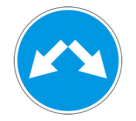
Знаки 4.2.1 "Объезд препятствия справа", 4.2.2 "Объезд препятствия слева", 4.2.3 "Объезд препятствия справа или слева" применяют для указания направлений объезда начала ограждений, установленных по оси проезжей части, начала разделительной полосы, приподнятых островков безопасности и направляющих островков, различного рода препятствий на проезжей части.
Знак 4.3 "Круговое движение" устанавливают на каждом въезде на перекресток (площадь), на котором организовано круговое движение.
Знак 4.4 "Велосипедная дорожка" применяют для обозначения дорожки, по которой разрешается движение только велосипедов и мопедов, а при отсутствии тротуара или пешеходной дорожки - пешеходов.
Знак 4.5 "Пешеходная дорожка" применяют для обозначения дорожек, предназначенных только для движения пешеходов.
Знак 4.6 "Ограничение минимальной скорости" применяют для введения на дороге или отдельной полосе движения скоростного режима, при котором движение разрешается только с указанной или большей скоростью.
Знак 4.7 "Конец ограничения минимальной скорости" применяют для указания конца участка дороги, на котором было введено ограничение минимальной скорости движения знаком 4.6 или 5.15.3, и устанавливают в конце участка или полосы движения.

Знаки 4.8.1-4.8.3 "Направление движения транспортных средств с опасными грузами" применяют для указания направления движения транспортных средств, которые перевозят опасные грузы и в соответствии с действующим законодательством должны быть обозначены опознавательными знаками (информационными таблицами) "Опасный груз".
5. Знаки особых предписаний
Знаки особых предписаний применяют для введения особых режимов движения или их отмены.
Знак 5.1 "Автомагистраль" применяют для обозначения дорог, на которых действуют требования Правил дорожного движения, устанавливающие порядок движения по автомагистралям.
Знак 5.2 "Конец автомагистрали" устанавливают в конце автомагистрали, в начале съездов с автомагистрали и предварительно с табличкой 8.1.1 на расстоянии 400 и 1000 м до конца автомагистрали.
Знак 5.3 "Дорога для автомобилей" применяют для обозначения дороги, предназначенной для движения только автомобилей, автобусов и мотоциклов.
Знак 5.4 "Конец дороги для автомобилей" устанавливают в конце дороги, обозначенной знаком 5.3.
Знак 5.5 "Дорога с односторонним движением" применяют для обозначения дороги или проезжей части, по которой движение транспортных средств по всей ширине осуществляется в одном направлении.
Знак 5.6 "Конец дороги с односторонним движением" устанавливают в конце дороги или проезжей части, обозначенной знаком 5.5.
Знаки 5.7.1 и 5.7.2 "Выезд на дорогу с односторонним движением" устанавливают перед всеми боковыми выездами на участок дороги или проезжую часть, обозначенный(ую) знаком 5.5.
Знак 5.8 "Реверсивное движение" применяют для обозначения участков дорог, на которых с помощью реверсивных светофоров или знаков 5.15.7 осуществляется регулирование движения транспортных средств по отдельным полосам проезжей части с поочередным предоставлением права на движение в противоположном направлении.

Знак 5.9 "Конец реверсивного движения" устанавливают в конце участка дороги с реверсивным движением, обозначенного знаком 5.8.
Знак 5.10 "Выезд на дорогу с реверсивным движением" применяют для указания выездов на участок дороги, обозначенный знаком 5.8, и устанавливают на всех боковых выездах.
Знак 5.11 "Дорога с полосой для маршрутных транспортных средств" применяют для обозначения дороги, по которой движение маршрутных транспортных средств осуществляется по специально выделенной полосе навстречу общему потоку транспортных средств.

Знак 5.12 "Конец дороги с полосой для маршрутных транспортных средств" устанавливают в конце дороги, обозначенной знаком 5.11.
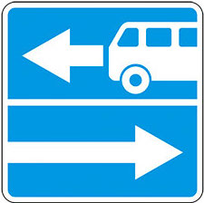

Знаки 5.13.1, 5.13.2 "Выезд на дорогу с полосой для маршрутных транспортных средств" применяют для обозначения выездов на дорогу, обозначенную знаком 5.11.
Знак 5.14 "Полоса для маршрутных транспортных средств" применяют для обозначения полосы, по которой движение маршрутных транспортных средств осуществляется попутно общему потоку транспортных средств.
Знаки 5.15.1 "Направления движения по полосам" и 5.15.2 "Направления движения по полосе" применяют для указания разрешенных направлений движения по каждой из полос на перекрестке, где требуется обеспечить использование полос в соответствии с интенсивностью движения транспортных средств по различным направлениям.
5.6.16 Знаки 5.15.1 и 5.15.2, разрешающие поворот налево из крайней левой полосы, разрешают и разворот из этой полосы.
Действие знаков 5.15.1 и 5.15.2, установленных перед перекрестком, распространяется на перекресток, если знаки 5.15.1 или 5.15.2, установленные на перекрестке, не дают других предписаний.
Действие знаков не распространяется на маршрутные транспортные средства.
Знаки устанавливают над проезжей частью на таком расстоянии от перекрестка, чтобы водители имели возможность своевременно осуществить необходимые перестроения. Знаки устанавливают в начале разделения полос движения разметкой 1.1.
Каждый из знаков 5.15.2 располагают над серединой полосы, для которой он предназначен.
Предварительные знаки 5.15.1 и 5.15.2 устанавливают на дорогах, имеющих перед перекрестком три полосы, знак 5.15.2 - три полосы и более для движения в данном направлении. На других дорогах предварительные знаки допускается устанавливать при необходимости.
Знак 5.15.1 вне населенных пунктов на дорогах, имеющих перед перекрестком не более трех, а в населенных пунктах - не более двух полос движения в данном направлении, допускается размещать справа от дороги, при этом устанавливают и предварительный знак 5.15.1.
Предварительные знаки 5.15.1 и 5.15.2 размещают на расстоянии 50-150 м до места установки основных знаков.
При наличии знаков 5.15.1 и 5.15.2 знаки 4.1.1-4.1.6 не применяют
Знак 5.15.3 "Начало полосы" применяют для обозначения начала дополнительной полосы на подъеме или полосы торможения на пересечениях и примыканиях, при увеличении числа полос для движения в данном направлении.
Знак 5.15.4 "Начало полосы" применяют для обозначения начала участка средней полосы, предназначенного для движения в данном направлении, на трехполосных дорогах, при поочередном выделении разметкой двух полос для каждого из направлений.
Знак 5.15.5 "Конец полосы" применяют для обозначения конца дополнительной полосы на подъеме или полосы разгона, при уменьшении числа полос для движения в данном направлении.
Знак 5.15.6 "Конец полосы" применяют для обозначения конца полосы, предназначенной для движения в данном направлении, участка средней полосы на трехполосных дорогах, обозначенного знаком 5.15.4.
Знак 5.15.7 "Направление движения по полосам" применяют для указания числа полос и направления движения по каждой из полос при организации движения в одном из направлений по большему числу полос, чем во встречном.
Знак 5.15.8 "Число полос" применяют для указания числа полос в данном направлении и режимов движения по полосам.
Знаки 5.16 "Место остановки автобуса и (или) троллейбуса", 5.17 "Место остановки трамвая" и 5.18 "Место стоянки легковых такси" применяют для обозначения остановочных пунктов соответствующих видов маршрутных транспортных средств и стоянки легковых такси.
Знаки 5.19.1 и 5.19.2 "Пешеходный переход" применяют для обозначения мест, выделенных для перехода пешеходов через дорогу.
Знак 5.20 "Искусственная неровность" применяют для обозначения границ искусственной неровности.
Знак 5.21 "Жилая зона" применяют для обозначения территории (зоны), в пределах которой действуют требования Правил дорожного движения, устанавливающие порядок движения в жилых зонах.
Знак 5.22 "Конец жилой зоны" применяют для обозначения конца жилой зоны.

Знаки 5.23.1 и 5.23.2 "Начало населенного пункта" применяют для обозначения начала населенного пункта, в пределах которого действуют требования Правил дорожного движения, устанавливающие порядок движения в населенных пунктах.
Знаки 5.24.1 и 5.24.2 "Конец населенного пункта" применяют для указания конца населенного пункта, обозначенного соответственно знаками 5.23.1 и 5.23.2.
Знак 5.25 "Начало населенного пункта" применяют для обозначения начала населенного пункта, в котором на данной дороге по условиям безопасности движения нецелесообразно вводить требования Правил дорожного движения, устанавливающие порядок движения в населенных пунктах.
Знак 5.26 "Конец населенного пункта" применяют для указания конца населенного пункта, обозначенного знаком 5.25.
Знаки 5.27 "Зона с ограничениями стоянки", 5.29 "Зона регулируемой стоянки" и 5.31 "Зона с ограничением максимальной скорости" применяют для обозначения территории (участка дороги), в пределах которой регламентирована стоянка или ограничена максимальная скорость движения.
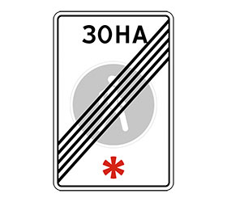
Знаки 5.28 "Конец зоны с ограничениями стоянки", 5.30 "Конец зоны регулируемой стоянки", 5.32 "Конец зоны с ограничением максимальной скорости" и 5.34 "Конец пешеходной зоны" применяют для указания конца территории (участка дороги), обозначенной соответственно знаками 5.27, 5.29, 5.31, 5.33.
Знак 5.33 "Пешеходная зона" применяют для обозначения территории (участка дороги), на которой разрешено движение только пешеходов.
6. Информационные знаки
Информационные знаки применяют для информирования участников движения о расположении на пути следования населенных пунктов и других объектов, а также об установленных и рекомендуемых режимах движения.
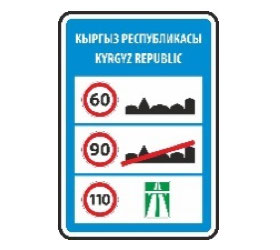
Знак 6.1 "Общие ограничения максимальной скорости" применяют для информирования водителей транспортных средств об общих ограничениях скорости, установленных Правилами дорожного движения на дорогах Кыргызской Республики.
Знак 6.2 "Рекомендуемая скорость" применяют для информирования водителей транспортных средств о скорости, с которой рекомендуется двигаться на данном участке дороги.
Знаки 6.3.1 "Место для разворота" и 6.3.2 "Зона для разворота" применяют для указания мест разворота.
Знак 6.4 "Место стоянки" применяют для обозначения площадок, предназначенных для стоянки транспортных средств, с одной из табличек 8.6.1-8.6.9 - для обозначения околотротуарных стоянок.
Знак 6.5 "Полоса для аварийной остановки" применяют для информирования водителей транспортных средств о расположении полосы для аварийной остановки на крутом спуске.
Знаки 6.6 "Подземный пешеходный переход" и 6.7 "Надземный пешеходный переход" устанавливают изображением навстречу основным пешеходным потокам у всех входов в (на) пешеходный переход.
Знаки 6.8.1-6.8.3 "Тупик" применяют для обозначения дорог, не имеющих сквозного проезда.
Знак 6.9.1 "Предварительный указатель направлений" применяют для предварительного информирования о направлении движения к населенным пунктам и другим объектам.
Знак 6.9.2 "Предварительный указатель направления" применяют для предварительного информирования о направлении движения к населенным пунктам и другим объектам.
Знак 6.9.3 "Схема движения" применяют для указания маршрута объезда, если на перекрестке движение в отдельных направлениях запрещено, или направлений движения на перекрестке со сложной планировкой.
Знаки 6.10.1 "Указатель направлений" и 6.10.2 "Указатель направления" применяют для указания направления движения к населенным пунктам и другим объектам.
Знак 6.11 "Наименование объекта" применяют для указания наименования объекта, за исключением населенного пункта.

Знак 6.12 "Указатель расстояний" применяют для указания расстояний до фактической границы застройки населенных пунктов или других объектов, расположенных на маршруте.
Знак 6.13 "Километровый знак" применяют для указания расстояния от места его установки до начального или конечного пункта дороги.
Знаки 6.14.1 и 6.14.2 "Номер маршрута" применяют для указания номера, а также номера и направления дороги (маршрута), утвержденного в установленном порядке.
Знаки 6.15.1-6.15.3 "Направление движения для грузовых автомобилей" применяют для указания рекомендуемого маршрута движения грузовых автомобилей, тракторов и самоходных машин, если их движение на перекрестке в одном из направлений запрещено.
Знак 6.16 "Стоп-линия" применяют для указания места остановки транспортных средств на регулируемых перекрестках и на нерегулируемых железнодорожных переездах.
ГОСТ Р 52289-2004
5.7.18 Знак устанавливают справа от дороги или над проезжей частью. Допускается устанавливать знак над каждой полосой движения.
Если знак применяют самостоятельно (без разметки 1.12), то расстояние от знака до светофора, шлагбаума или ближнего рельса определяют по 6.2.14. Знак допускается применять для дублирования разметки 1.12, в этом
случае его устанавливают в одном поперечном сечении с разметкой.
Знак 6.17 "Схема объезда" применяют для указания маршрута объезда участка дороги, временно закрытого для движения.
Знаки 6.18.1-6.18.3 "Направление объезда" применяют для указания направления движения по маршруту объезда участка дороги, временно закрытого для движения.
Знаки 6.19.1 и 6.19.2 "Предварительный указатель перестроения на другую проезжую часть" применяют на дорогах с разделительной полосой для указания направления движения для объезда закрытого участка проезжей части и направления движения для возвращения на проезжую часть, предназначенную для движения в данном направлении.
Знаки 6.20.1 и 6.20.2 "Аварийный выход" применяют для указания места в тоннеле, где находится аварийный выход.
Знаки 6.21.1 и 6.21.2 "Направление движения к аварийному выходу" применяют для указания направления движения к аварийному выходу в тоннеле и расстояние до него.
7. Знаки сервиса

Знаки 7.1 "Пункт первой медицинской помощи"
7.2 "Больница"
7.3 "Автозаправочная станция"
7.4 "Техническое обслуживание автомобилей"
7.5 "Мойка автомобилей"
7.6 "Телефон"
7.7 "Пункт питания"
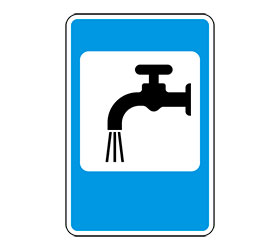
7.8 "Питьевая вода"
7.9 "Гостиница или мотель"
7.10 "Кемпинг"
7.11 "Место отдыха"
7.12 "Пост Главного управления по обеспечению дорожного движения"
7.13 "Милиция"
7.14 "Пункт контроля международных автомобильных перевозок"
Знак 7.15 "Зона приема радиостанции, передающей информацию о дорожном движении" применяют для обозначения начала участка дороги, на котором осуществляется прием передач радиостанции на частоте, указанной на знаке.
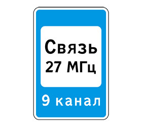
Знак 7.16 "Зона радиосвязи с аварийными службами" применяют для обозначения участка дороги, на котором действует система радиосвязи с аварийными службами.
7.17 "Бассейн или пляж"
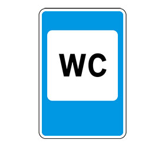
7.18 "Туалет" применяют для информирования участников движения о соответствующих объектах.
Знаки устанавливают у объектов.
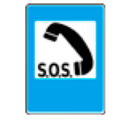
Знаки 7.19 "Телефон экстренной связи" и 7.20 "Огнетушитель" применяют для указания мест, где находится телефон для вызова оперативных служб или огнетушитель.
8. Знаки дополнительной информации (таблички)
Знаки дополнительной информации (таблички) применяют для уточнения или ограничения действия других дорожных знаков.

Табличку 8.1.1 "Расстояние до объекта" применяют с предупреждающими знаками, если расстояние от знака до начала опасного участка меньше или больше расстояний, указанных в пунктах 5.2.2, 5.2.3 ГОСТ Р 52289-2004, а также с предварительными знаками других групп, за исключением знаков 5.15.1, 5.15.2, 6.9.3, 6.15.1-6.15.3, 6.17, 7.1-7.18.
Табличку 8.1.2 "Расстояние до объекта" применяют со знаком 2.4 вне населенных пунктов, если перед перекрестком установлен знак 2.5.
Таблички 8.1.3 и 8.1.4 "Расстояние до объекта" применяют с предупреждающими знаками и со знаками 5.1, 5.3, 6.4 в местах поворота к указываемым объектам.
Табличку 8.2.1 "Зона действия" применяют:
- со знаками 1.12.1-1.19, 1.23, 1.25-1.33 - для указания протяженности опасного участка;
- со знаками 3.16, 3.20, 3.22, 3.24, 3.26 - для указания зоны действия знака;
- со знаком 5.16 - для указания протяженности одного или нескольких расположенных друг за другом остановочных пунктов;
- со знаком 6.2, кроме случая, когда он установлен совместно с предупреждающим знаком, если действие знака 6.2 нет необходимости распространять до ближайшего перекрестка;
- со знаком 6.4, установленным с табличкой(ами), уточняющей(ими) или ограничивающей(ими) его действие, при этом табличку 8.2.1 размещают под другими табличками, если действие знака не распространяется до ближайшего перекрестка.


Таблички 8.2.2-8.2.6 "Зона действия" применяют только со знаками 3.27-3.30:
табличку 8.2.2 - для указания зоны действия знака, если она не распространяется до ближайшего перекрестка;
табличку 8.2.3 - для указания конца зоны действия знака;
табличку 8.2.4 - для информирования водителей о нахождении их в зоне действия знака;
таблички 8.2.5 и 8.2.6 - для указания зоны действия знака, справа и (или) слева от него, когда остановка или стоянка запрещены вдоль края проезжей части площади, фасада здания и т.п.
При размещении знаков на стойках таблички размещают под знаком.
Таблички 8.3.1-8.3.3 "Направление действия" применяют со знаками 3.2-3.9, 5.3, устанавливаемыми непосредственно перед перекрестком для указания направления их действия на пересекаемую дорогу, а также со знаком 1.32.
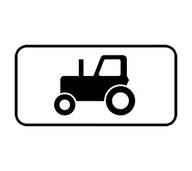
Таблички 8.4.1-8.4.8 "Вид транспортного средства" применяют для указания вида транспортного средства, на который распространяется действие знака.
Таблички распространяют действие знака:
8.4.1 - на грузовые автомобили, в том числе и с прицепом, разрешенной максимальной массой более 3,5 т;
8.4.2 - на грузовые автомобили или тракторы с прицепом или полуприцепом любого типа, а также на транспортные средства, буксирующие механические транспортные средства;
8.4.3 - на легковые автомобили, а также грузовые автомобили с разрешенной максимальной массой не более 3,5 т;
8.4.3.1 - на электромобили и гибридные автомобили, имеющие возможность зарядки от внешнего источника;
8.4.4 - на маршрутные транспортные средства;
8.4.5 - на тракторы и другую сельскохозяйственную и дорожную технику;
8.4.6 - на мотоциклы с боковым прицепом или без него, скутеры с рабочим объемом двигателя более 50 см3 или максимальной конструктивной скоростью (при любом двигателе), превышающей 50 км/ч, а также трициклы и квадроциклы;
8.4.7 - на велосипеды, электровелосипеды и велогибриды;
8.4.8 - на транспортные средства, обозначенные опознавательными знаками (информационными таблицами) "Опасный груз";
Таблички 8.5.1 "Субботние, воскресные и праздничные дни"
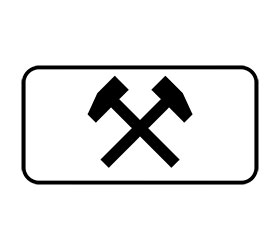
Знак 8.5.2 "Рабочие дни"
Знак 8.5.3 "Дни недели"
8.5.4-8.5.7 "Время действия" применяют для указания дней недели или времени суток, когда действует знак.
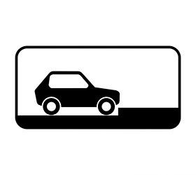

Таблички 8.6.1—8.6.9 «Способ постановки транспортного средства на стоянку» применяют со знаком 6.4 для указания способа постановки транспортных средств на околотротуарной стоянке.
ГОСТ Р 52289—2004
Табличка 8.6.1 указывает, что все транспортные средства должны быть поставлены на стоянку на проезжей части вдоль тротуара.
Таблички 8.6.2—8.6.9 указывают, что стояночная площадка предназначена для легковых автомобилей и мотоциклов, которые должны быть поставлены на стоянку способом, указанным на табличке.
Табличку 8.7 «Стоянка с неработающим двигателем» применяют со знаком 6.4 для запрещения стоянки транспортных средств с работающим двигателем.
Табличку 8.8 «Платные услуги» применяют со знаком 6.4, установленным у стояночной площадки, за пользование которой взимается плата, а также с другими знаками для информирования о взимании платы за проезд или какие-либо услуги.
Табличку 8.9 «Ограничение продолжительности стоянки» применяют со знаком 6.4 для указания максимальной продолжительности пребывания транспортного средства на стоянке у объектов массового кратковременного посещения.
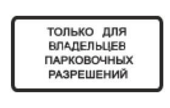
Табличку 8.9.1 «Стоянка только для владельцев парковочных разрешений» указывает, что на парковке, обозначенной знаком 6.4, могут размещаться только транспортные средства, владельцы которых имеют разрешение на парковку, полученное в установленном органами исполнительной власти Кыргызской Республики или органами местного самоуправления порядке и действующее в пределах территории, границы которой установлены соответствующими органами исполнительной власти или органами местного самоуправления.

Табличку 8.10 «Место для осмотра автомобилей» применяют со знаками 6.4 и 7.11 для указания наличия эстакады или смотровой канавы на стояночных площадках или в местах отдыха.
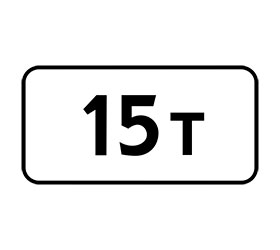
Табличку 8.11 «Ограничение разрешенной максимальной массы» применяют для указания, что действие знака распространяется только на транспортные средства с разрешенной максимальной массой, более указанной на табличке.
Табличку 8.12 «Опасная обочина» применяют со знаком 1.25, если ремонтные работы ведутся на обочине или обочина используется для складирования строительных материалов и (или) размещения строительной техники.
Табличку 8.13 «Направление главной дороги» применяют со знаками 2.1,2.4, 2.5 для указания направления главной дороги на перекрестке, где она изменяет свое направление.
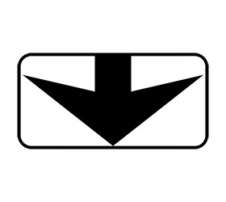
Табличку 8.14 «Полоса движения» применяют для указания полосы, на которую распространяется действие знака, при этом знак располагают над полосой движения.

Табличку 8.15 «Слепые пешеходы» применяют совместно со знаками 1.22, 5.19.1, 5.19.2 перед пешеходными переходами, расположенными в непосредственной близости от объектов, которые посещают слепые и слабовидящие.
Табличку 8.16 «Влажное покрытие» применяют со знаками 1.15, 3.20, 3.22, 3.24 для указания, что действие знака распространяется только на период времени, когда покрытие проезжей части влажное.
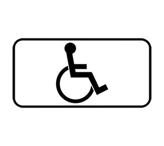
Табличку 8.17 «Инвалиды» применяют совместно со знаком 6.4 для указания, что стояночная площадка (или ее часть) отведена для стоянки транспортных средств, управляемых инвалидами I и II групп или перевозящих таких инвалидов.
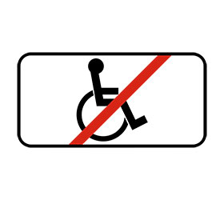
Табличку 8.18 «Кроме инвалидов» применяют для указания, что действие знака не распространяется на транспортные средства, управляемые инвалидами I и II групп или перевозящие таких инвалидов.
Табличку 8.19 «Класс опасного груза» применяют со знаками 3.32, 3.33, 4.8.1—4.8.3 для указания, что действие знаков распространяется на транспортные средства, перевозящие опасный груз приведенного на табличке номера класса(ов).
Таблички 8.20.1 и 8.20.2 «Тип тележки транспортного средства» применяют со знаком 3.12 для указания числа сближенных осей транспортного средства, для каждой из которых приведенная на знаке масса является предельно допустимой.

Таблички 8.21.1—8.21.3 «Вид маршрутного транспортного средства» применяют со знаком 6.4 для указания площадки для стоянки транспортных средств у станции метро, остановки автобуса и (или) троллейбуса, трамвая.
Таблички 8.22.1—8.22.3 «Препятствие» применяют со знаками 4.2.1—4.2.3 для лучшей ориентации водителей при объезде препятствия.
Табличка 8.23 «Фотовидеофиксация» указывает, что в зоне действия дорожного знака, либо на данном участке дороги может осуществляться фиксация правонарушений работающими в автоматическом режиме специальными техническими средствами, имеющими функции фотосъемки, киносъемки и видеозаписи, или средствами фотосъемки, киносъемки и видеозаписи.
Табличка 8.24 «Работает эвакуатор» указывает, что в зоне действия дорожных знаков осуществляется принудительная эвакуация транспортного средства.

Табличка 8.25 "Экологический класс транспортного средства" указывает, что действие знаков 3.3-3.5, 3.18.1, 3.18.2 и 4.1.1-4.1.6 распространяется на механические транспортные средства:
- экологический класс которых, указанный в регистрационных документах на эти транспортные средства, ниже экологического класса, указанного на табличке;
- экологический класс которых не указан в регистрационных документах на эти транспортные средства.
Табличка указывает, что действие знаков 5.29 и 6.4 распространяется на механические транспортные средства:
- экологический класс которых, указанный в регистрационных документах на эти транспортные средства, соответствует экологическому классу, указанному на табличке, либо выше экологического класса, указанного на табличке;
- экологический класс которых не указан в регистрационных документах на эти транспортные средства.